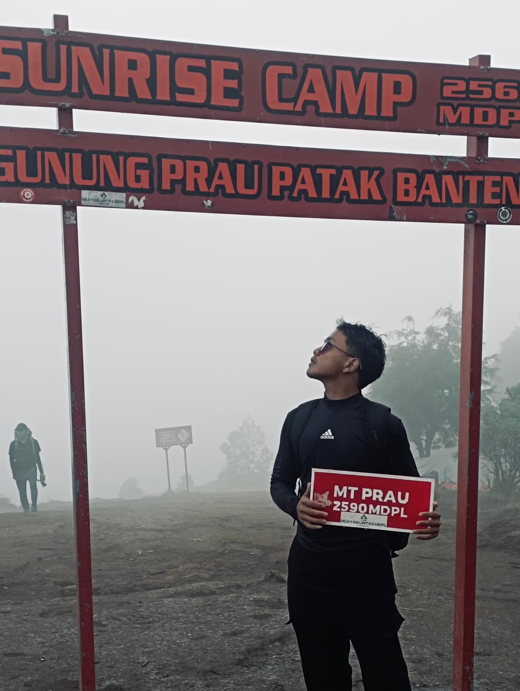

“Bukan tentang siapa yang terkuat, tapi siapa yang mampu menghormati keagungan alam.”
May. 10, 2024 by A. Kevin Yulianto
Ekspedisi pendakian yang paling membekas, pada bulan mei kevin melakukan pendakian di gunung prau daerah Bakulan, Dieng, Wonosobo, Jawa tengah. dalam perjalanan menuju puncak tidaklah mudah banyak rintangan dan tantangan yang harus di trabas olehnya, pada pendakian nya kevin terkena hujan, badai, dan kabut yang sangat tebal. tetapi untungnya dengan persiapan fisiknya yang matang dia sampai tujuan dan kembali dengan selamat.
KEINDAHAN

Bunga Daisy
Tumbuhan yang tumbuh di gunung prau
Keindahan alam yang harus di jaga dan di lestarikan
Salah satu keunikan dan keindahan Gunung Prau